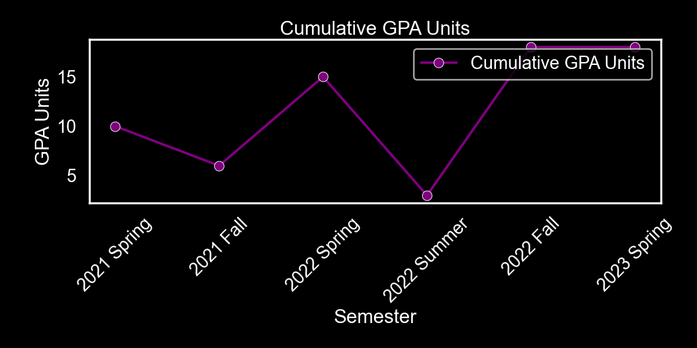

Transcript
Cumulative GPA (by semester)

Term GPA (by semester)

GPA Hours (by semester)
{{ semester.semester_period }}
Term GPA: {{ semester.term_gpa }}
Cumulative GPA: {{ semester.cum_gpa }}
| Code | Title | Grade Spec | Course Units | GPA Units |
|---|---|---|---|---|
| {{ course.code }} | {{ course.title }} | {{ course.grade_spec }} | {{ course.course_units }} | {{ course.gpa_units }} |